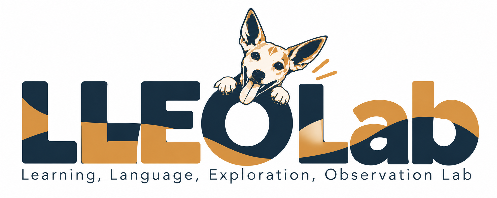

Learning
How does what we know shape what we can learn?
Explore learning ↗LLEO LAB
Learning, Language, Exploration, Observation
How does what we know shape what we can learn?
LLEO brings together questions about learning and language with the tools to explore them and the observations to test them.

How does what we know shape what we can learn?
Explore learning ↗How do listeners turn unfolding sound into words?
Explore language ↗What can we discover by making a theory runnable?
Explore exploration ↗How do we turn behavior into trustworthy evidence?
Explore observation ↗FEATURED FOUNDATION · DISSERTATION RESEARCH
When does existing knowledge help—and when does it hold us back? Explore experiments on learning history, speech cues, and word learning.
Explore the dissertation repository ↗Research takes people as well as ideas. Our handbook introduces the practical side: joining a project, learning Git, building experiments in Gorilla, and giving contributors visible credit.
Open the lab handbook →